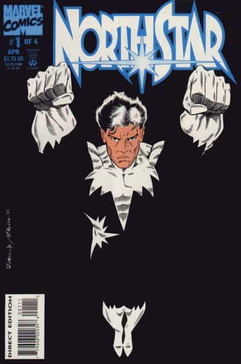

I'm a heterosexual anti-feminist and a conservative male. A frequent news watcher and I dedicate my findings to various MRA sites and anti-feminist authors. I enjoy swimming, hiking, observing mainstream entertainment and masculine literature.


On February 27, 2017, Disney’s XD channel made headlines for its first gay kiss in an episode of the children’s cartoon Star vs. the Forces of Evil. The Disney XD show saw main character Star and her friend Marco attend a concert where they were surrounded by kissing couples, including two men, and later in the episode, two women. A closer look at the history of Disney (or any top animation or kids shows brand) shows that the company has been sporting a gay agenda for over two decades.
Consider the BBC film adaptation of The Boy In The Dress, a children’s book written by David Walliams, a television comedian best known for the show Little Britain. It tells the story of a twelve-year-old boy who enjoys cross-dressing. It is aimed at readers aged eight to twelve, intended to teach children that cross-dressing is a healthy and acceptable hobby and not something to be ashamed of.
Yet another show on CN that shoves homsexuality into your child’s mind is “Clarence”
Some people, especially the internet’s fujioshi community (explained later), think that homosexuality is cute and many comedians should base their jokes on this distortion of nature, but it’s now heavily promoted by the media and entertainment industries. The target of these Marxist homosexual propaganda broadcasts are not teenagers or adults but the small children whose minds are still very receptive to external inputs and suggestions.
A subliminal message is a signal or message designed to pass below the normal limits of perception. For example, it might be inaudible to the conscious mind (but audible to the unconscious or deeper mind) or might be an image transmitted briefly and unperceived consciously and yet perceived unconsciously. It has often been suggested that subliminal techniques are used in advertising and for propaganda purposes (e.g. party political broadcasts).
A form of subliminal messaging commonly believed to exist involves the insertion of “hidden” messages into movies and TV programs. In the concept of “moving pictures,” the popular theory of subliminal messages usually suggests that subliminal commands can be inserted into a moving picture at the rate of perhaps 1 frame in 25 (or roughly 1 frame per second). The hidden command in a single frame will flash across the screen so quickly that it is not consciously perceived, but the command will supposedly appeal to the subconscious mind of the viewer.
In the Pixar movie Monsters Inc. there’s scene where this drawing of people having intercourse pops up for a brief moment.
Harry Benshoff and Sean Griffin write that animation has always “hint[ed] at the performative nature of gender and homosexuality, such as when Bugs Bunny puts on a wig and a dress, and acts effeminately”.
During the late nineteenth century and into the 1920s–30s, homosexuality was largely depicted in gender-based conventions and stereotypes. Oftentimes male characters intended to be identified as gay were flamboyant, effeminate, and degenerate characters in film.
The terms “pansy” and “sissy” became tagged to homosexuality and was described as “a flowery, fussy, effeminate soul given to limp wrists and mincing steps.” Because of his high-pitched voice and attitude, the pansy easily transitioned from the silent film era into the talking pictures where those characteristics could be taken advantage of.
Charlie Chaplin’s A Woman (1915), in which Chaplin cross dresses and plays with the affection of various men. Famous series of drag queens included Miss Fatty (1915), featuring Fatty Arbuckle, and Sweedie (1914–16), created a comedic view of drag that many in the late 1910s and early 1920s could find entertaining.

Wonder Bar (1934) Features a brief, but explicit homosexual reference that most of the straight audience would definitely dismiss
Introduced in 1963, Northstar was the first openly gay superhero in the Marvel Comics universe, back when these comics were still being marketed to young boys and parents had no concern over what comic their child reads. He married his husband, Kyle Jinadu, in Astonishing X-Men #51 (June 2012), which was the first depiction of a same-sex wedding in mainstream comics.

Following the 1969 Stonewall riots in New York City (a major turning point in the LGBT-rights movement), Hollywood began to look at gay people as a possible consumer demographic. It was now time for mainstream media to come out of the closet and feature homosexuality more explicitly. Through the work of an increasingly visible LGBT movement and overall attitudes in America about human sexuality, sex gender roles changed and a huge destruction of masculinity occurred as a result of the LGBT and feminist movements.

The Disney film The Rescuers featured a naked woman in the background, but since the scene was moving too fast, you’ll get to see it when you pause it at the right moment. Note that this movie is intended for kids. Not related to homosexuals but you can see the Marxists’ intent to sexualize children.
Up to recently, many children’s cartoons used subliminal messaging of same-sex relationships, because conservative parents would protest if the messages were direct, but we’ve now entered a period where companies like Disney feel comfortable inserting explicit messages without fear of retribution. This didn’t happen overnight: starting in 1895 with The Dickson Experimental Sound Film, those in media have been taking one calculated step at a time for their ultimate goal in sexualizing children with homosexual propaganda.
Read Next: Homosexuality Acceptance Is Leading To The Normalization Of Pedophilia